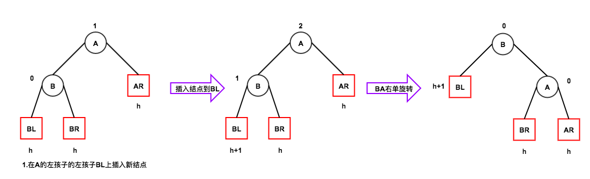
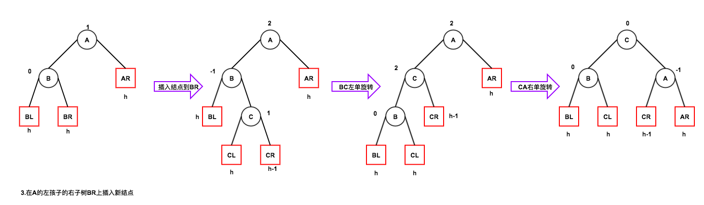
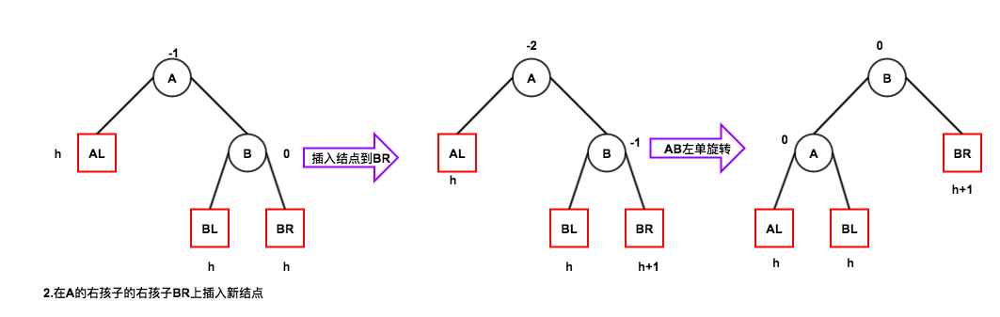
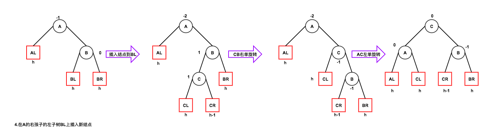

平衡二叉树(AVL树)
为避免二叉排序树的高度增长过快，降低二叉排序树的性能，引入平衡二叉树
平衡二叉树或者是空树，或者是具有如下性质的二叉树：
- 它的左右子树都是平衡二叉树
- 左右子树的高度差绝对值不超过1
1 平衡二叉树的插入操作
在二叉排序树的插入操作的基础上多了一步平衡操作，使其达到平衡。这就是平衡二叉树的插入操作
平衡二叉树的插入操作分为四种情况
注：方代表子树，圆代表结点。
每向二叉排序树中插入一个新结点，该新结点都在二叉排序树的叶子结点上
1.1 在左子树的左子树插入

1.2 在左子树的右子树插入
此时，又分为两种情况。
- 新结点插入到结点 C 的左子树上，如下图所示。
- 新结点插入到结点 C 的右子树上
两种情况都是先左旋后右旋

1.3 在右子树的右子树插入

1.4 在右子树的左子树插入
此时，又分为两种情况。
- 新结点插入到结点 C 的左子树上，如下图所示。
- 新结点插入到结点 C 的右子树上
两种情况都是先右旋后左旋
